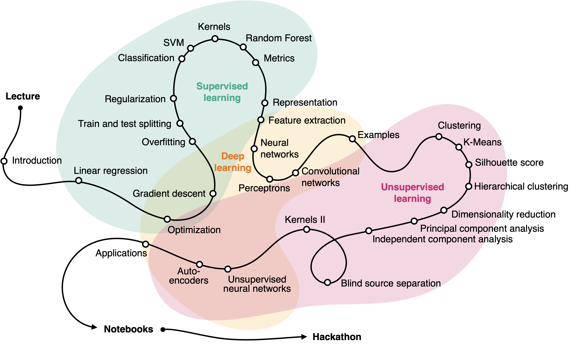
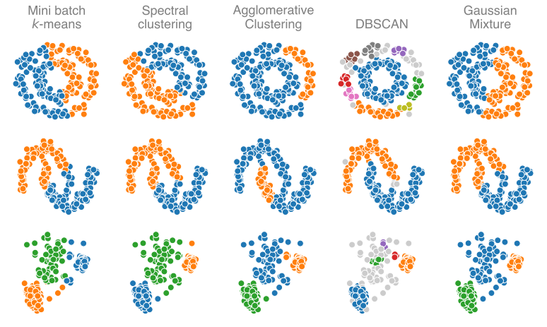

Lecture by Léonard Seydoux the master-level classes of the institut de physique du globe de Paris with contents inspired by the scikit-learn Python library documentation and the deep learning book of Ian Goodfellow.
Léonard Seydoux Antoine Lucas ́Eléonore Stutzmann Alexandre Fournier David Weissenbach
Léonard Seydoux
Antoine Lucas
́Eléonore Stutzmann
Alexandre Fournier
David Weissenbach
leonard-seydoux/earth-data-science
Lectures (8h) Statistics and machine learning.
Notebooks (20h) Solve Earth science problems.
Final hackathon (4h) Task-solving challenge.

Machine learning for Earth science: why, what, and how? Are any of those methods useful for your research? How to read papers that use machine learning?
Most humans can pinpoint events.
Most humans can pinpoint events. Experts can classify them.
Expert-detected marsquake within continuous insight data
Machine learning is a field of study in artificial intelligence concerned with the development and study of statistical algorithms that can effectively generalize and thus perform tasks without explicit instructions.
An algorithm learns from experience with respect to a task and performance, if its performance at solving the task improves with experience.
All three elements are required.
The data
A set of samples xi\mathbf{x}_ixi and labels yi\mathbf{y}_iyi to learn from:
D={(xi,yi)}i=1N\mathcal{D} = \{(\mathbf{x}_i, \mathbf{y}_i)\}_{i=1}^N D={(xi,yi)}i=1N
A parametric function fθf_\thetafθ that maps data x\mathbf{x}x to y^\hat{\mathbf{y}}y^
fθ:x↦y^f_\theta : \mathbf{x} \mapsto \hat{\mathbf{y}} fθ:x↦y^
A measurement of the model performance
L(y^,y)\mathcal{L}(\hat{\mathbf{y}}, \mathbf{y}) L(y^,y)
Learning
θ∗=argminθL(fθ(x),y)\theta^* = \arg\min_\theta \mathcal{L}\Big(f_\theta(\mathbf{x}), \mathbf{y}\Big) θ∗=argθminL(fθ(x),y)
For instance, an image is a sample xxx with
x∈X=RH×W×Cx \in \mathbb{X} = \mathbb{R}^{H \times W \times C} x∈X=RH×W×C
where HHH is the height, WWW the width, and CCC the channels. The label of an image can be represented by a category yyy with
y∈Y={0,1,…,K}y \in \mathbb{Y} = \{0, 1, \ldots, K\} y∈Y={0,1,…,K}
where KKK is the number of categories.
Predict some output y\mathbf{y}y from input x\mathbf{x}x (regression, classification).
Learn data distribution p(x)p(\mathbf{x})p(x) or structure (clustering, reduction).
Learns a policy to maximize the reward (game playing, robotics).
How to solve a regression or classification task with machine learning?
Regression xxx and yyy are continuous
Classification xxx is continuous and yyy is descrete
Given a dataset
D={(xi,yi)}i=1N,\mathcal{D} = \{(\mathbf{x}_i, \mathbf{y}_i)\}_{i=1}^N, D={(xi,yi)}i=1N,
optimize the parameters θ\thetaθ of a function fθf_\thetafθ that best predicts the label y\mathbf{y}y from the sample x\mathbf{x}x, that is find the optimal parameters θ∗\theta^*θ∗ that minimizes the loss L\mathcal{L}L, such as
θ∗=argminθL(fθ(x),y).\theta^* = \arg\min_\theta \mathcal{L}\Big(f_\theta(\mathbf{x}), \mathbf{y}\Big). θ∗=argθminL(fθ(x),y).
Find the set of coefficients θ=(a,b)∈R2\theta = (a, b) \in \mathbb{R}^2θ=(a,b)∈R2 that best predicts yyy from xxx so that
fθ:x↦ax+b.f_\theta : x \mapsto ax + b. fθ:x↦ax+b.
Here, the best explanation relates to the loss. For instance, the mean squared error:
L(θ)=1N∑i=1N(fθ(xi)−yi)2.\mathcal{L}(\theta) = \frac{1}{N} \sum_{i=1}^N \left( f_\theta(x_i) - y_i \right)^2. L(θ)=N1i=1∑N(fθ(xi)−yi)2.
How do we minimize the loss?
Grid search to find θ∗\theta^*θ∗ among gridded values of θ\thetaθ.
Pros: easy to implement, exhaustive search, uncertainty estimation.
Cons: unscalable. If 0.1s / evaluation, then 2 parameters with 100 values each takes 1/2 hour. For 5 parameters it takes more than 30 years!
Any smarter idea?
Random search to find θ∗\theta^*θ∗.
Pros: easy to implement, scalable, uncertainty estimation, can include prior knowledge.
Cons: not exhaustive, can be slow to converge.
Estimate the gradient of L\mathcal{L}L w.r.t. the parameters θ\thetaθ, update the parameters towards gradient descent.
Pros: converges faster than random search.
Cons: gets stuck in local minima, slow to converge, needs for differentiability.
Recipe
Hyperparameters
That's part of the hyperparameters tuning. More about that in the deep learning lectures.
Having a loss close to 0 does not mean that the model generalizes well.
By splitting the dataset into a training and a testing set, we evaluate the performance on unseen (but similar) data.
Add a penalty term R\mathcal{R}R to the loss LR=L+λR\mathcal{L_R} = \mathcal{L} + \lambda \mathcal{R}LR=L+λR, where λ\lambdaλ is the regularization strength.
The regularization penalizes the model's complexity.
Because of combination of models, losses, and regularizations. The scikit-learn.org website provides a unified interface in a greybox style.
greybox style
The model selection is made by experience or trial and error.
How do you addess this regression problem? More after the deep learning lectures.
Here again, we have many possibilities.
Experience: manual labels y∈{0,1}\mathbf{y} \in \{0, 1\}y∈{0,1} obtained from various cases, where two features x∈R2\mathbf{x} \in \mathbb{R}^2x∈R2 are measured.
Task: predict the category y^\hat{\mathbf{y}}y^ of the samples x\mathbf{x}x.
Performance: how should we measure the performance of a classifier?
Support vector machines search the hyperplane of normal vector w\mathbf{w}w and bias bbb that split the classes.
Note: in 2D, a hyperplane is a line.
The support vectors are the samples that are closest to the other class.
The decision function f(x)f(\mathbf{x})f(x) dependson the sign of the linear combination of the normal vector and the sample:
f(x)=w⋅x+bf(\mathbf{x}) = \mathbf{w} \cdot \mathbf{x} + b f(x)=w⋅x+b
The quantity to minimize is the Hinge loss:
L(w,b)=1N∑i=1Nmax(0,1−yi(w⋅xi+b))\mathcal{L}(\mathbf{w}, b) = \frac{1}{N} \sum_{i=1}^N \max\left(0, 1 - y_i \left(\mathbf{w} \cdot \mathbf{x}_i + b\right)\right) L(w,b)=N1i=1∑Nmax(0,1−yi(w⋅xi+b))
The quantity to minimize is the hinge loss:
What about non linear problems?
The kernel trick allows to map the data to a higher dimensional space made from the input features where the problem is linearly separable.
The Radial Basis Functions (RBF) is an infinite kernel K(x,x′)=exp(−∥x−x′∥22σ2)K(\mathbf{x}, \mathbf{x}') = \exp\left(-\frac{\|\mathbf{x} - \mathbf{x}'\|^2}{2\sigma^2}\right)K(x,x′)=exp(−2σ2∥x−x′∥2)
The SVC is a generalization of the SVM that digests more than two classes.
The decision function is linear in the kernel space only. We can project it back to the data space to inspect it.
Decision trees are a set of rules that learns to predict the category.
Random forests are an ensemble of decision trees that vote for the category.
These algorithms are extremely powerful.
There is no need for a complex model if you have a good representation of the data.
We can engineer features from the raw data to improve the model's performance.
We can also learn the features from the data.
We can see waveforms x∈RN\mathbf{x}\in\mathbb{R}^Nx∈RN as points of a NNN-dimensional space
Yet, seismic waveform do not occupy this space fully, likely very sparse.
Lots of dimensions, but few data.
Random sampling of the pixels of a face. What is the likelihood that the reshuffled image is a face?
Like waveforms, images are living on a manifold.
The exclusive OR problem (XOR) is a simple problem not linearly separable, hard to learn using traditional machine learning algorithms. Multi-layer perceptrons can.
Supervised learning experiences a set of examples containing features xi∈X\mathbf{x}_i \in \mathbb{X}xi∈X associated with labels y∈Y\mathbf{y} \in \mathbb{Y}y∈Y to be predicted from the features (here, classification).
In this case, x\mathbf{x}x lies in R3×N\mathbb{R}^{3 \times N}R3×N, and y\mathbf{y}y in [0,…,5][0, \ldots, 5][0,…,5]. Which representation of x\mathbf{x}x works best?
We need to find relevant descriptors of our data, used as features x\mathbf{x}x.
Accuracy of the predictions measures the model's performance (= confusion matrix)
What is the guarantee that the features we choose are the best ones?
How deep learning works? What is a neural network? How to train it, and what for?
A neuron, or unit, takes a set of inputs x\bf xx and outputs an activation value hhh, as
h=φ(∑i=0Nwixi+b)h = \varphi\left(\sum_{i=0}^{N} w_i x_i + b \right) h=φ(i=0∑Nwixi+b)
with wiw_iwi the weights, bbb the bias, φ\varphiφ is the activation function, and NNN is the number of inputs.
A neuron, or unit, transforms a set of inputs x\bf xx into an output hhh, as
with wiw_iwi the weights, bbb the bias, φ\varphiφ is the activation function, and NNN is the number of inputs. Common activation functions include the sigmoid function, defined as
φ(z)=11+e−z\varphi(z) = \frac{1}{1 + e^{-z}} φ(z)=1+e−z1
with wiw_iwi the weights, bbb the bias, φ\varphiφ is the activation function, and NNN is the number of inputs. Common activation functions include the rectified linear unit (ReLU), defined as
φ(z)=max(0,z)\varphi(z) = \max(0, z) φ(z)=max(0,z)
A multilayer perceptron is a neural network with multiple hidden layers:
hi(1)=φ(1)(∑jwij(1)xj+bi(1))hi(2)=φ(2)(∑jwij(2)hj(1)+bi(2))yi=φ(3)(∑jwij(3)hj(2)+bi(3))\begin{align*} h_i^{(1)} &= \varphi^{(1)}\left(\sum_j w_{ij}^{(1)}x_j + b_i^{(1)}\right)\\ h_i^{(2)} &= \varphi^{(2)}\left(\sum_j w_{ij}^{(2)}h_j^{(1)} + b_i^{(2)}\right)\\ y_i &= \varphi^{(3)}\left(\sum_j w_{ij}^{(3)}h_j^{(2)} + b_i^{(3)}\right) \end{align*} hi(1)hi(2)yi=φ(1)(j∑wij(1)xj+bi(1))=φ(2)(j∑wij(2)hj(1)+bi(2))=φ(3)(j∑wij(3)hj(2)+bi(3))
A multilayer perceptron is a neural network with multiple hidden layers. Generally speaking (omitting the biases):
y=φ(ℓ)(W(ℓ)φ(ℓ−1)(W(ℓ−1)…φ(1)(W(1)x)…))y = \varphi^{(\ell)}\left(\mathbf{W}^{(\ell)}\varphi^{(\ell - 1)}\left(\mathbf{W}^{(\ell - 1)} \ldots \varphi^{(1)}\left(\mathbf{W}^{(1)}\mathbf{x}\right) \ldots \right)\right) y=φ(ℓ)(W(ℓ)φ(ℓ−1)(W(ℓ−1)…φ(1)(W(1)x)…))
Multi-layer perceptrons that solves the XOR problem with binary activations:
We note fθ(x):x↦yf_\theta(x): x \mapsto yfθ(x):x↦y the model, where θ\thetaθ are the parameters of the model (including biases and weights).
Learning is the process of finding the parameters θ∗\theta^*θ∗ that minimize the loss L\mathcal{L}L.
The backpropagation computes the loss function gradient with respect to θ\thetaθ.
The gradient descent updates θ\thetaθ in the direction of the steepest descent.
Once the gradient is computed, the parameters are updated using the gradient descent algorithm:
θ←θ−η∂L∂θ\begin{align*}\\ \theta &\leftarrow \theta - \eta \frac{\partial \mathcal L}{\partial \theta} \end{align*} θ←θ−η∂θ∂L
where is η\etaη the learning rate that controls the size of the update.
Local minima: getting stuck in a local minimum.
Sattling points: behaves as a local minimum but is not.
Plateau: flat loss function, vanishing gradient, slow convergence.
Plateau are flat regions of the loss function where the gradient is zero. This can happen with activation functions such as the sigmoid function with saturation. It can also happen with the ReLU function for inputs with negative values.
The learning rate is a hyperparameter that controls the size of the update of the parameters:
θ←θ−η∂L∂θ\theta \leftarrow \theta - \eta \cfrac{\partial \mathcal L}{\partial \theta} θ←θ−η∂θ∂L
We must look for a learning rate to avoid local minima while still converging fast enough, without diverging.
We can also adapt the learning rate.
The momentum is a technique to accelerate the gradient descent by adding a fraction of the gradient of the previous iteration:
p←αp−η∂L∂θθ←θ+p\begin{align*} p &\leftarrow \alpha p - \eta \frac{\partial \mathcal L}{\partial \theta}\\ \theta &\leftarrow \theta + p \end{align*} pθ←αp−η∂θ∂L←θ+p
where α\alphaα is the a damping parameter, and viv_ivi is the velocity. Lower values of α\alphaα give more weight to the current gradient, higher values give more weight to the previous gradients.
x^i=xi−μiσi2+ϵ\hat x_i = \frac{x_i - \mu_i}{\sqrt{\sigma_i^2 + \epsilon}} x^i=σi2+ϵxi−μi
where μi\mu_iμi is the mean of the input, σi\sigma_iσi is the standard deviation of the input, and ϵ\epsilonϵ is a small constant to avoid division by zero. You can also apply the normalization after the activation function.
The training curves are a good way to monitor the training of a model.
The gradient of the loss function with respect to the parameters θ\thetaθ is computed using the full-batch gradient descent equal to:
∂L∂θ=1N∑i=1N∂L(i)∂θ\frac{\partial \mathcal L}{\partial \theta} = \frac{1}{N} \sum_{i=1}^N \frac{\partial \mathcal L^{(i)}}{\partial \theta}\\ ∂θ∂L=N1i=1∑N∂θ∂L(i)
The stochastic gradient descent is a technique to compute the loss gradient from every sample in the dataset at each iteration.
The mini-batch gradient descent is a technique to compute the gradient of the loss function with respect to a subset of the dataset. It is a compromise between the full-batch gradient descent and the stochastic gradient descent.
Overfitting: too complex model, does not generalize to new data.
Underfitting: too simple model, does not capture the data structure.
The training set is used to train the model. The test set is used to evaluate the model generalization error on unseen data.
The typical split is 80% for the training set and 20% for the test set.
We must ensure that both the training and test losses decrease. If the training loss is much lower than the test loss, the model overfits the training set.
The model complexity is roughly the number of parameters of the model. The model generalization error is the error on the test set.
Regularization is a technique to control overfitting by adding a penalty term R\mathcal{R}R to the loss function. The regularization parameter λ\lambdaλ controls the strength of the regularization.
Lreg=L+λR=L+λ∥θ∥22\mathcal{L}_\mathrm{reg} = \mathcal{L} + \lambda \mathcal{R} = \mathcal{L} + \lambda \|\mathbf{\theta}\|^2_2 Lreg=L+λR=L+λ∥θ∥22
Handwritten digits set of grayscale images x∈R28×28x \in \mathbb{R}^{28 \times 28}x∈R28×28 and classes y∈{0,…,9}y \in \{0, \dots, 9\}y∈{0,…,9}. Goal: predict the number encoded in the pixels.
Training of a fully-connected autoencoder on real seismic data.
This is an unsupervised learning task: the input and output are the same.
We learned a low-dimensional representation for the seismic data.
These are the latent variables of the autoencoder.
Example applications:
Vision is robust to a lot:
We need invariance to these transformations.
Handwritten digits set of grayscale images x∈R28×28x \in \mathbb{R}^{28 \times 28}x∈R28×28 and classes y∈{0,…,9}y \in \{0, \dots, 9\}y∈{0,…,9}.
An image may be of 200×200200 \times 200200×200 pixels ×3\times 3×3 color channels. With a fully connected network with 100010001000 hidden units, we would have N=200×200×3×1000=120N = 200 \times 200 \times 3 \times 1000 = 120N=200×200×3×1000=120M parameters.
This clearly does not scale to large images.
Convolutional layers are a type of layer that are used in convolutional neural networks. They are composed of a set of learnable filters.
Each hidden unit look a local content from the input image, althought the weights are shared across the entire image.
Discrete image convolution:
(A∗B)ij=∑n∑mAnmBi−n,j−m(A * B)_{ij} = \sum_n \sum_m A_{nm}B_{i-n, j-m} (A∗B)ij=n∑m∑AnmBi−n,j−m
where AAA is a input image, and BBB is a convolutional kernel (weights) to learn.
Convolutional layers extract local features from the input image ≠ fully connected layers that extract global features.
Note the last three layers are fully connected. When extracting low-dimensional data from images, this is often needed.
Here are the filters from the first layer of VGG16 after training on 100k+ images. These filters collect various shapes, scales, colors, etc.
The illustration of the previous concepts with examples from seismology. And then you will be ready to apply these concepts to your own problems!
Features: 3-comp. waveform x∈RN×3x \in \mathbb{R}^{N \times 3}x∈RN×3 Target: prob. of event in cell 111 to 666 Loss: cross-entropy with regularization L=−∑cqclogpc+λ∥w∥22\mathcal{L} = - \sum_c q_c \log p_c + \lambda \| \mathbf{w}\|^2_2L=−∑cqclogpc+λ∥w∥22
Features: 3-component seismic signal x∈R3000×3x \in \mathbb{R}^{3000 \times 3}x∈R3000×3 Targets: probabilities pi(x)p_i(x)pi(x) of PPP, SSS, and NNNoise over time =y∈R3000×3= y \in \mathbb{R}^{3000 \times 3}=y∈R3000×3
Features: 3-component seismic signal x∈R3000×3x \in \mathbb{R}^{3000 \times 3}x∈R3000×3 Targets: probabilities pi(x)p_i(x)pi(x) of PPP, SSS, and NNNoise over time =y∈R3000×3= y \in \mathbb{R}^{3000 \times 3}=y∈R3000×3 Loss: cross-entropy L=−∑i∑xp(x)log(q(x))\mathcal{L} = -\sum_i\sum_x p(x)\log(q(x))L=−∑i∑xp(x)log(q(x))
Features: 3-component seismic signal x∈R3000×3x \in \mathbb{R}^{3000 \times 3}x∈R3000×3 Predictions: likelihood qi(x)q_i(x)qi(x) of PPP, SSS, and NNNoise over time
Transfer learning is the use of a pre-trained model fα=fθ∗f_\alpha = f_{\theta^*}fα=fθ∗ on a new task as a initial point for training a new model fα→fα∗f_\alpha \rightarrow f_{\alpha^*}fα→fα∗.
Fine-tuning is the partial re-training of a pre-trained model on a new task, while keeping the weights of the pre-trained layers fixed.
Libraries are constantly evolving, and the documentation is often incomplete.
Clustering
Group similar data points together based on some similarity measure.
Dimensionality reduction
Find a low-dimensional representation of the data.

Two main definitions of clustering:
Top-bottom: partition the heterogeneous data into homogeneous subsets.
Bottom-up: group the data samples based on some criterion of similarity.
-> We need to provide a definition of similarity or homogeneity.
->
kkk-means is a clustering algorithm that partitions the data into kkk clusters by minimizing the inertia:
argminC∑i=1k∑xj∈Ci∥xj−μi∥2\arg\min_{\mathbf{C}} \sum_{i=1}^{k} \sum_{\mathbf{x}_j \in C_i} \|\mathbf{x}_j - \mu_i\|^2 argCmini=1∑kxj∈Ci∑∥xj−μi∥2
where μi\mu_iμi is the centroid of cluster CiC_iCi.
In practice, we need to provide the number of clusters kkk, and the algorithm will find the best partition:
Spectral clustering uses the eigenvectors of the similarity matrix to find the clusters.
The eigenvectors of a matrix are obtained by solving the eigenvalue problem:
Ax=λx\mathbf{A}\mathbf{x} = \lambda \mathbf{x} Ax=λx
where A\mathbf{A}A is a square matrix, x\mathbf{x}x is the eigenvector, and λ\lambdaλ is the eigenvalue.
The singular value decomposition (SVD) of a matrix A\mathbf{A}A is defined as:
A=UΣVT\mathbf{A} = \mathbf{U}\mathbf{\Sigma}\mathbf{V}^T A=UΣVT
where U\mathbf{U}U and V\mathbf{V}V are orthogonal matrices, and Σ\mathbf{\Sigma}Σ is a diagonal matrix.
Principal component analysis (PCA) is a dimensionality reduction technique that uses eigendecomposition:
Independent component analysis (ICA) is a dimensionality reduction technique that maximizes the independence of the components.
For blind source separation, ICA is preferred over PCA.
Kernel PCA is a non-linear dimensionality reduction technique that uses the kernel trick to project the data onto a higher-dimensional space.
Deep neural networks can be used for unsupervised learning: Autoencoders: learn a low-dimensional representation of the data. Generative adversarial networks: learn a generative model of the data.
Autoencoders are neural networks that learn a low-dimensional representation of the data. They are composed of an encoder and a decoder.
The input x\mathbf{x}x is encoded into a latent representation z\mathbf{z}z, and decoded into x′\mathbf{x}'x′.
The loss function is the difference between the input and the reconstruction:
L=∥x−x′∥2\mathcal{L} = \|\mathbf{x} - \mathbf{x}'\|^2 L=∥x−x′∥2
Convolutional autoencoders use convolutional layers instead of fully connected layers. They are used for image denoising, compression, and quality assessment.
Now we can move to the notebooks!
River water suspended load prediction from turbidity.
Machine learning, data inspection, preprocessing, regression.
Retrieve flower species from sepal and petal measurements.
Machine learning, normalization, classification, cross-validation.
Automate the identification of objects in a lidar cloud from labeled subset.
Supervised learning, classification, non-linear models, multi-scale features.
Handwritten digit classification.
Supervised learning, classification, multi-layer perceptron, convolutional neural network.
Picking of seismic waves from continuous recordings, retrain a pre-trained model to adapt to new data.
Transfer learning, fine-tuning, convolutional neural network.